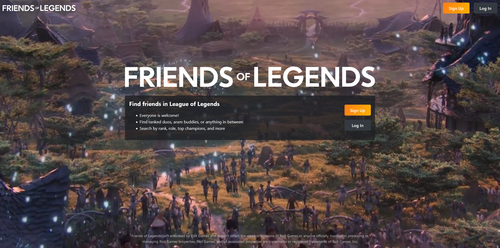
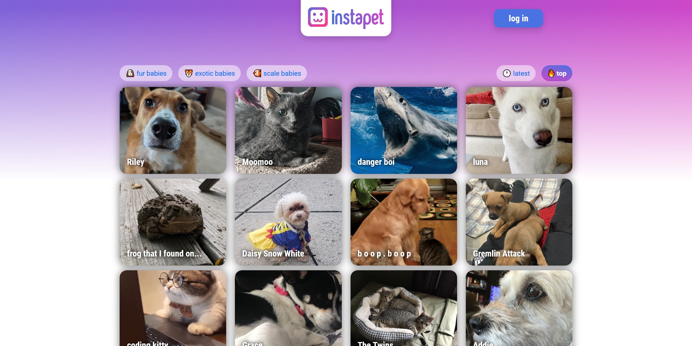
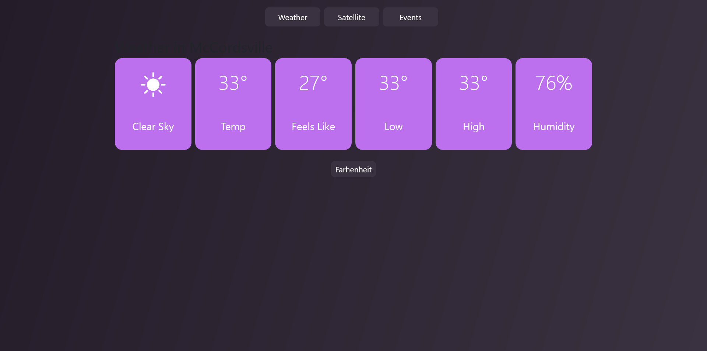

hi, i'm
Katie Sallows
web developer
#about
Hey, I'm Katie. I've been coding a long time—I began learning HTML and CSS at the age of 12. At 15 I was contracted to make websites for local companies in my small hometown. Unfortunately I developed a lot of imposter syndrome about coding. I thought I wasn't smart enough to make it my career, so for a few years I didn't code.
In 2021 I enrolled in Eleven Fifty Academy to relearn web development and pick up the latest trends and frameworks. It was an amazing experience and I came out of it feeling renewed in my abilities. At this point I know I can learn anything I set my mind to.
#projects

InstaPet
Upload pictures of your pet, browse other user's pets, 'like' pictures, and view yours and others profiles. Group project with Gabrielle Ford.
ReactPostgreSQLExpress.js
ReactPostgreSQLExpress.js

